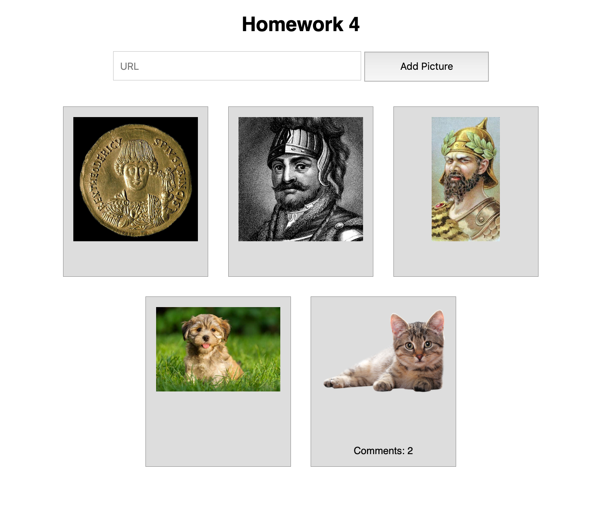
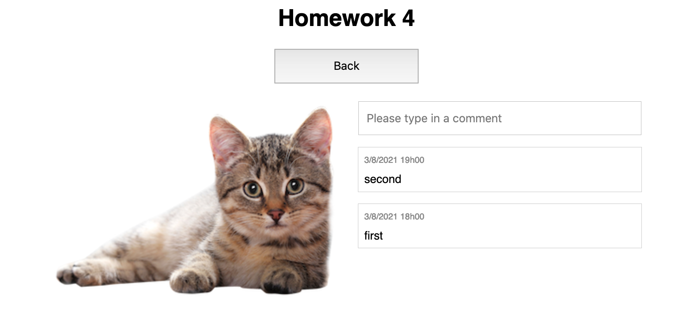

This homework is to be done in teams of two. You're welcome to discuss with other students, but all submitted work must be original and your own. If you use a solution from another source you must cite it — this includes when that source is someone else helping you.
Submit part 1 and Part 2 together. Zip all your files for your backend (part 1) and your frontend (part 2) and include in your README file not only your team members, but also how to start your server and the route to load your frontend.
In Homework 4, we develop the skeleton of what may be an Instagram-like web app: a way to upload and store images with associated comments.
In the first part of Homework 4, you built the web application server backend, with all the required routes. It stores a list of pictures and for each picture a list of comments that have been entered for that picture. Each picture is assigned a unique identifier when it is added to the backend, and that identifier is what's used to refer to the picture throughout.
You implemented the following routes:
GET /pictures
GET /picture/<ID>
POST /new-picture-url
GET /comments/<ID>
POST /new-comment/<ID>In this Part 2, we build out a frontend.
I'm not going to pin down what the frontend looks like. It's all up to you. I care about functionality, and that's what I'm going to describe here. I'm going to give screenshots of my frontend, but you should not feel like you have to reproduce it. Use it as inspiration.
There's no starting files for this one. You can use the demo code we wrote for the front-end lectures as a starting point if you wish. But you do not have to. Internally, you can structure your code however you want. I suggest you use an MVC setup like we used in the class demos, but again, you do not have to.
Please deploy the frontend via the web application server you developed in Part 1. Please use port 8080. That is, it should be possible to access your frontend using a URL like http://localhost:8080/index.html. If you do anything different (for whatever reason), just document it in your README file so I can figure out how to run and test your code.
Create the main page of your frontend that should show all the pictures available in your backend, in a thumbnail gallery form (each picture should be shown in roughly the same size). You get the list of pictures by calling endpoint /pictures, and each picture can be accessed via URL http://localhost:8080/picture/<ID> where <ID> is the unique ID of the picture you want.
Pictures should be ordered from most recent to oldest, as given by the picture timestamp.
Add an indication of how many comments are available for each picture (if there are any comments for a picture).
For example:

Add a URL input element and a button that lets you add a new picture to your backend. This should use the /new-picture-url endpoint. Once a new picture is added, you should add the picture to the gallery.
You can see my URL input element on the previous screenshot.
Code your frontend so that when you click on one of the pictures in the picture gallery, it should show you a larger version of the picture, along with a list of all the comments for that pictures, ordered from most recent to oldest as given by each comment timestamp. (You should show the time of the comment as well in some way.) You can get the list of comments for a picture using endpoint /comments/<ID> where <ID> is the ID of the picture you're showing.
You should figure out a way to "hide" the picture gallery when showing the picture, and give a way to go back to the picture gallery when you're showing a "full" picture. You should be able to reuse whatever trick you used to implement the tabs on Homework 3. If you can't get this "hide" the picture gallery functionality to work, then just figure out a design for the frontend that lets you see the picture gallery and select a picture to show the full picture and the comments that feels usable as an actual web app.
For example, after clicking on the cat picture in my picture gallery above:

Add an input field on the "show full picture" screen that lets you add a new comment to the picture. This should use the /new-comment/<ID> endpoint, where <ID> is the ID of the picture to which you're adding a comment.
Once a new comment is added, you should add the comment to the list of comments being shown. For full marks, you should also see the number of comments associated with that picture updated when you get back to the picture gallery. (FYI, I found this the trickiest bit. Your mileage may vary.)
You can see my comment input box on the previous screenshot.
Add a new input field to the picture gallery screen that lets you upload a file from your local drive to the backend, instead of supplying a URL.
That will require you to investigate the <input type="file"> element, and how you can pass a file to an endpoint via fetch. (StackOverflow is your friend.)
You will need a new POST endpoint on the backend, call it new-picture-upload, that can receive a file and save it to disk just like new-picture-url saves a file to disk. Just like new-picture-url, the new picture should be assigned a fresh picture ID, and the POST should return a JSON object with a field id containing the Picture ID of the created picture and the timestamp:
{
"id": <Picture ID>,
"timestamp": <Date uploaded>
}The picture should have no comments associated with it initially.
Once a new picture is uploaded, you should add the picture to the gallery, like in Question 2.